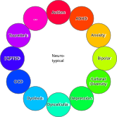
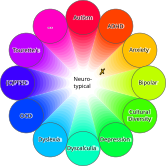
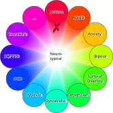
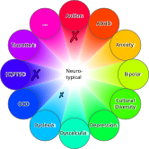

# Neurodiversity<br>at Work ## Finding Curb Cuts for Everyone [Ole Mussmann](mailto:o.mussmann@esciencecenter.nl) Note: - what types are out there - challenges and benefits for people and the workplace - how to deal with it Not touching upon: - productivity - how much society ties value of human beings to their productivity - NLeSC is not a charity
# Terminology
## Spectrum
## Spectrum <div class="r-stack r-stretch"> <p></p> <p></p> <p></p> <p></p> </div> Note: no need to memorize... - Born: officially neurodiverse - Acquired: debated in literature - Context: useful, same impact - --- - ADHD: Attention Deficit/Hyperactivity Disorder - OCD: Obsessive Compulsive Disorder - PTSD: Post-traumatic Stress Disorder
Neurodiwhat?
A group 👨👨👦👦 can be neuro
diverse
🌈,
a person 👩 can be neuro
divergent
⤴️.
If not, they are neuro
typical
.
These describe differences—not intelligence, character, or worth.
# Flavors
## Statistical Caveats Neurodivergent people have a ... <ul> <li style="list-style-type: '➖ '">much higher unemployment rate (30-40% <sup>[<a href="#/sources">1</a>]</sup>), - 3x higher compared to any other disability, and - 8x higher compared to no disability. </li><br> <li class="fragment" style="list-style-type: '➕ '">much higher prevalence among software related jobs, - but it's probably not evenly distributed. </li> </ul> Note: - Harder to keep a job - --- - We are a truly colorful bunch!
ND Prevalence 15-20%
[
2
]
Starter Pack
ADHD
11%
[
3
]
Dyslexia
10%
[
4
]
Dysgraphia
7-15%
[
5
]
Dyscalculia
6%
[
6
]
...
DLC
Anxiety D/o
19%
[
8
]
Depression
5%
[
9
]
(C)PTSD
4%
[
10
]
...
Dissociative Identity D/o
1.5%
[
7
]
## Disability You are not disabled? <!-- .element: class="fragment" --> You are "temporarily able-bodied/minded". <!-- .element: class="fragment" --> Or not. <!-- .element: class="fragment" --> Note: - divisive label, but useful here - --- - reflect on this
Models of Disability
Medical
inherent
disability as a deficit
focus on curing/managing
Social
extrinsic
disability through ableism
focus on removal of barriers
Disability is a product
of societal barriers we create.
We can take those barriers away again.
# Challenges
## Disability Invisibility through...
## ... Lack of Knowledge Note: - People on the spectrum don't know they are - Other people don't know that you might be
## Intermezzo: Guess The Condition <div class="r-stack"> <!-- https://www.intofilm.org/films/4196 --> <!-- https://www.wvxu.org/media/2017-03-13/good-idea-cbs-plans-young-sheldon-spin-off-from-big-bang-theory --> </div> <aside class="notes"> <ul> <li>randomly diagnosing people is usually not a good idea</li> <li>here it's instructive</li> <li>---</li> <li>rude, egocentric, sensory issues</li> <li>---</li> <li>bouncing all over the place, being in people's faces, talking a lot</li> <li>---</li> <li>this is what ND looks like?</li> <li>you know what it does not look like? me...</li> </ul> </aside>
## ... The Nature of the Condition Some disorders have little/no visible symptoms.
## ... Stereotypes - "Inattentive type" ADHD causes restlessness <em>in the mind</em>, it's - the dominant type in women, and - often underdiagnosed <sup>[<a href="#/sources">11</a>]</sup>. - Most autistic people don't lack empathy, see <!-- .element: class="fragment" --> - "Double Empathy Problem" - people with different experiences and neurotypes may struggle to understand one another in **both directions**. <sup>[<a href="#/sources">12</a>]</sup> Communication is shared work, not an autistic person’s defect. <!-- .element: class="fragment" --> Note: - NT people communicate well - ND people communicate well - Communication barrier between
## ... Masking <div class="fragment"> - ... are learned coping strategies, - often unbeknown to the masker. - ... drains energy, leading to <!-- .element: class="fragment" --> - increased stress and - risk for burnout. </div> A “fine” appearance may hide a high recovery cost. <!-- .element: class="fragment" -->
## Unspoken <div class="fragment" data-fragment-index="0"> <ul> <li>Due to ignorance,</li> <li>stigma,</li> <li>fear of repercussions: <ul class="fragment" data-fragment-index="1"> <li>loss of job,</li> <li class="fragment">visa,</li> <li class="fragment">residence permit.</li> </ul> </li> </ul> <span class="fragment" style="font-size: 100px;">🎭</span> </div> Note: - multiple people, before last week's update
## Needs and strengths are personal Neurodivergence can affect: - attention, planning, memory, and task switching - sensory processing, energy, and social recovery - communication, reading, writing, or movement It can also bring different perspectives and strengths. <!-- .element: class="fragment" --> <div class="fragment"> <ul> <li>math, pattern recognition, memorization<sup>[<a href="https://imagine.jhu.edu/blog/2022/10/05/neurodivergence-at-a-glance/">John Hopkins U.</a>]</sup></li> <li>innovation, culture and talent retention <sup>[<a href="https://www.forbes.com/councils/forbeshumanresourcescouncil/2022/02/15/neurodiversity-and-the-workplace/">Forbes</a>]</sup></li> <li>valuable ways of thinking and problem-solving <sup>[<a href="https://www2.deloitte.com/us/en/insights/topics/talent/neurodiversity-in-the-workplace.html">Deloitte</a>]</sup></li> </ul> </div> **Neither a deficit story nor a superpower story fits everyone.** <!-- .element: class="fragment" --> Note: benefits: - pattern recognition - hyperfocus - different viewpoints
# Approaches Note: - personal opinions, not exhaustive
## You - Work smarter, not harder. - Learn about your needs.<!-- .element: class="fragment" data-fragment-index="0" --> - Voice them, if you can.<!-- .element: class="fragment" data-fragment-index="0" --> - Be outspoken to your colleagues, if you can.<!-- .element: class="fragment" data-fragment-index="0" --> - What you percieve as "typical" might not be.<!-- .element: class="fragment" data-fragment-index="1" --> - Signs of a need from you or others!<!-- .element: class="fragment" data-fragment-index="1" --> - Focus on the destination, not the path.<!-- .element: class="fragment" data-fragment-index="1" --> - Make use of the resources available to you.<!-- .element: class="fragment" data-fragment-index="2" --> - E.g. confidential advisors<!-- .element: class="fragment" data-fragment-index="2" --> - Let's watch out for each other!<!-- .element: class="fragment" data-fragment-index="2" --> Note: - If you were lazy, you would enjoy yourself - NVC for voicing needs
## Solutions - Neurodivergent colleagues are<br>canaries in a coal mine. 🐦 - Search for the Curb-Cut Effect and<br>make work/life better for <em>everybody</em>. Note: - What ND people struggle with, NT's might find annoying, but not enough to do something about it
# How to Curb-cut in the Workplace?
## Inclusive Communication - Be direct, clear, and concise; explain jargon. - Put key instructions and decisions in writing. - Allow processing time and comfortable pauses. - If asked to repeat, try different words or a visual. - Talk **to** people, not about them; presume competence. <p class="fragment">Different does not automatically mean disrespectful.</p> Note: - bluntness != hostility. Address pain points clearly and respectfully with a specific alternative. - These practices help colleagues with different languages and cultures too.
## Better Meetings - Share an agenda and materials in advance. - State the purpose, owner, and expected decision. - Offer captions; record only with agreement. - Send concise written outcomes and actions. - Normalize movement, fidgeting, and breaks. <p class="fragment">Clarity is an accessibility tool.</p> Note: - Advance agendas help people prepare rather than improvise under stress. - Camera-off participation can reduce sensory and social load where feasible.
## Tasks and Time - Make priorities, deadlines, and “done” explicit. - Break large work into visible, manageable steps. - Protect uninterrupted focus time. - Reduce unnecessary context switches. - Consider flexible hours and modified breaks. <p class="fragment">Focus on the destination; allow different paths.</p> Note: - Flexibility requires agreements, not guessing. - Balance individual needs with team needs and essential work. - Unclear administration and shifting project priorities can create barriers for everyone.
## Sensory Environment - Offer access to a quieter workspace. - Allow noise-cancelling headphones. - Adjust lighting, temperature, or seating where possible. - Be mindful of strong fragrances. - Use remote or hybrid work when it removes a barrier. <p class="fragment">Comfort is not a productivity hack; it is part of sustainable work.</p>
## Shapes of Belonging Some people thrive on a close workplace community. For others, work is “just work”—and that is valid too. Inclusion does not require socializing, disclosure, or loving your job. <!-- .element: class="fragment" --> <p class="takeaway fragment">Make room for different ways of belonging.</p> Note: - Monocultures are not the goal, neurotypical or neurodivergent.
## Person > Label Instead of: **“What is your diagnosis?”** Try: <div class="fragment"> - “What helps you do your best work?” - “Which part of this process creates friction?” - “How would you prefer to receive instructions?” </div> Note: - That applies to yourself just as to others - Needs can change with context and over time - Formal accommodation processes may have their own documentation requirements
## Questions?
Sources
[
1
]
mydisabilityjobs.com/statistics/neurodiversity-in-the-workplace
[
2
]
www.ncbi.nlm.nih.gov/pmc/articles/PMC7732033/
[
3
]
www.cdc.gov/adhd/data/index.html
[
4
]
worldmetrics.org/dyslexia-statistics/
[
5
]
www.thetreetop.com/statistics/learning-disabilities-statistics
[
6
]
www.bdadyslexia.org.uk/dyscalculia/how-can-i-identify-dyscalculia
[
7
]
www.ncbi.nlm.nih.gov/books/NBK568768/
[
8
]
www.usa.edu/blog/mental-health-statistics/
[
9
]
www.who.int/news-room/fact-sheets/detail/depression
[
10
]
www.who.int/news-room/fact-sheets/detail/post-traumatic-stress-disorder
[
11
]
my.clevelandclinic.org/health/diseases/24741-adhd-in-women
[
12
]
leader.pubs.asha.org/doi/10.1044/leader.FTR2.25042020.58
Books
Against Technoableism: Rethinking Who Needs Improvement
Radical Inclusion: Seven Steps to Help You Create a More Just Workplace, Home, and World
Unmasking Autism: Discovering the New Faces of Neurodiversity
How to ADHD: An Insider's Guide to Working with Your Brain (Not Against It)